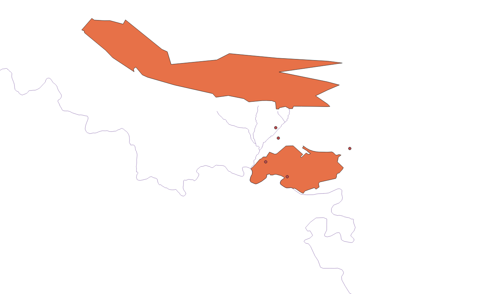
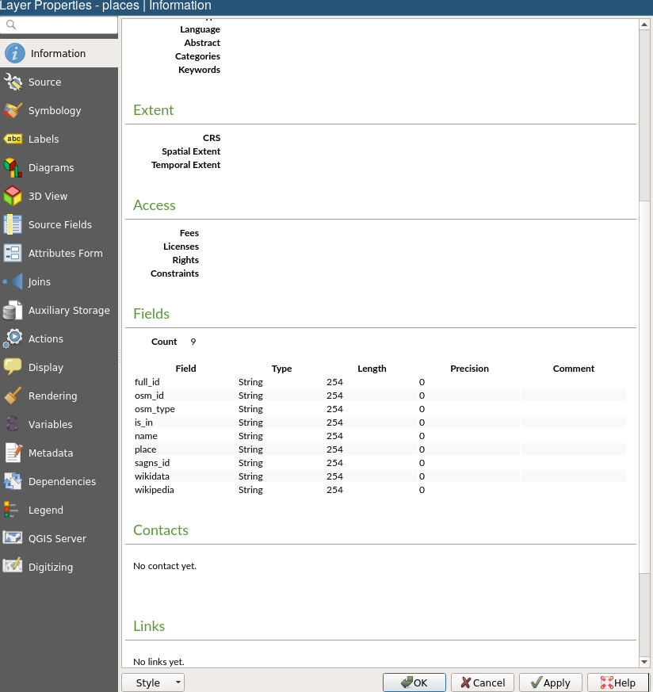

Data Models¶
Last Time¶
Open Source/Science/Education
Introduction to QGIS
Today¶
(Spatial) Data
GIS Data Models
Vector Model
(Spatial) Data¶
What is Data?¶
 [Source]
[Source]
Spatial Data¶
Also known as geospatial data
Observation that identify the geographic locations of
features on the Earth
boundaries on the Earth
Stored as coordinates and topology
80-100% of all data have a geographical component (Cressie 1993)
Types of Spatial Data¶
Point Pattern Data
Geostatistical Data
Lattice (Polygon) Data
Network Data
Spatial Interaction Data
Digital Data¶
In order to encode spatial data, we need a conceptual view that can form the basis for a data model.
By encode, we mean turn data as observations into digital data that can be used in a GISystem
Representation¶
Two key views of geospatial reality are the:
object view
field views
Object View¶
the world is viewed as a set of discrete spatial objects (entities)
can take different forms
points: location of a traffic accident
lines: stream segment/river segment
areas/polygons: Riverside County
Object View¶

Field View¶
geography seen as a collection of continuous variables
phenomena could be measured everywhere (at any point in space)
ex: air pollution, elevation, precipitation
Field View¶

¶
GIS Data Models¶
GIS Data Models¶
Vector Data Model (Today)
Raster Data Model (Future)
Vector Data Model¶
Each discrete object is considered to be a feature
Vector features have attributes, which consist of text or numerical information that describe the features
A vector feature has its shape represented using geometry
The geometry is made up of one or more interconnected vertices
Vector Geometry¶
The geometry is made up of one or more interconnected vertices
A vertex describes a position in space using an X, Y and optionally Z axis.
Geometries which have vertices with a Z axis are often referred to as 2.5D since they describe height or depth at each vertex, but not both.
¶

¶

¶

Scale and Representation¶

Scale and Representation¶

Vector Attributes¶

Attribute Properties¶

Issues with Vector Data¶
slivers
under and overshoots
topological errors
Slivers¶

Under and overshoots¶

Next Up¶
Vector Tables
Queries